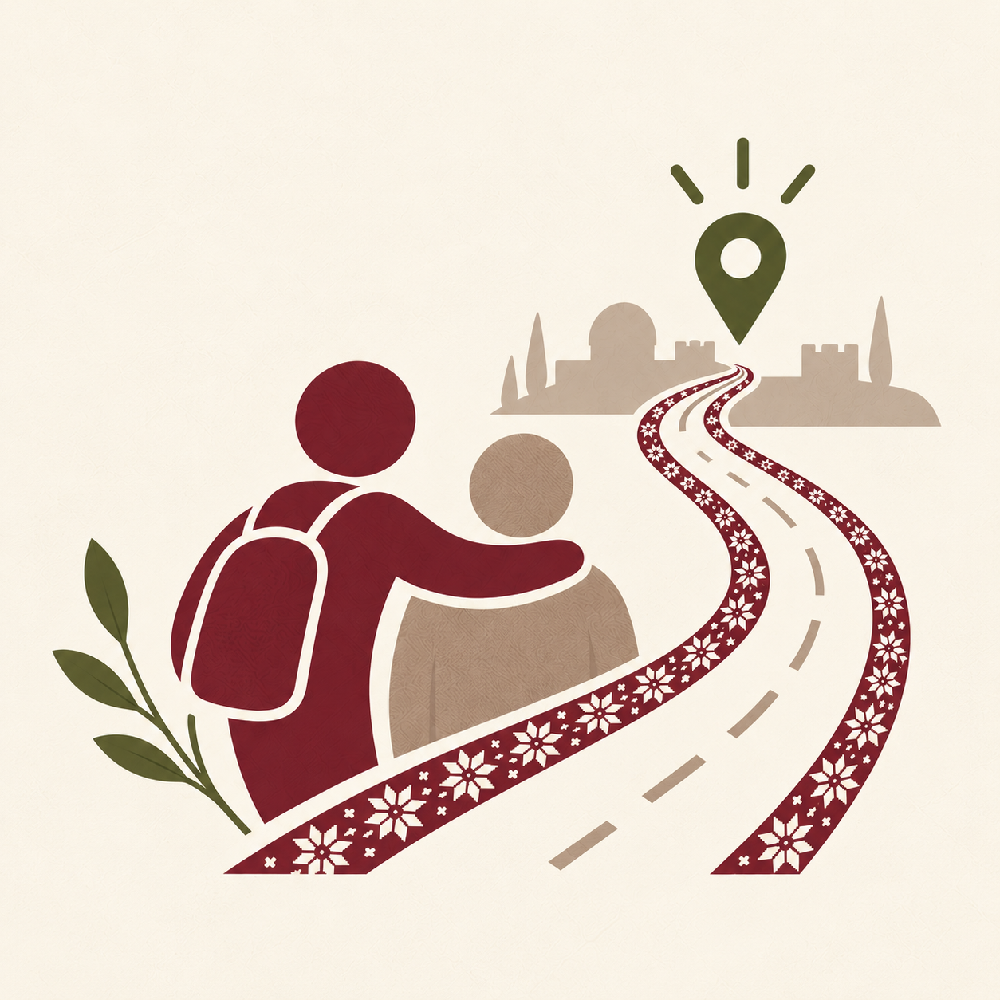

معك خطوة بخطوة
رفيقك في رحلتك للعلاج في القدس
من الاستعداد للرحلة، للطريق والمستشفى،
وحتى انتهاء زيارتك.
مش جاهز تبدأ رحلتك؟
ما معك تحويلة طبية أو تصريح؟ اعرف شو الخطوات اللي لازم تعملها أولًا.

مشوارك أسهل
مع رفيق
شو بتحتاج هسا؟
الخدمات المهمة موجودة معك بأي وقت.
مصمم لأجلك
واجهة بسيطة وسهلة الاستخدام
مجتمع داعم
تجارب ومساعدة من ناس سبقوك
المعلومة واضحة
نميّز بين المعلومات وتجارب المرضى